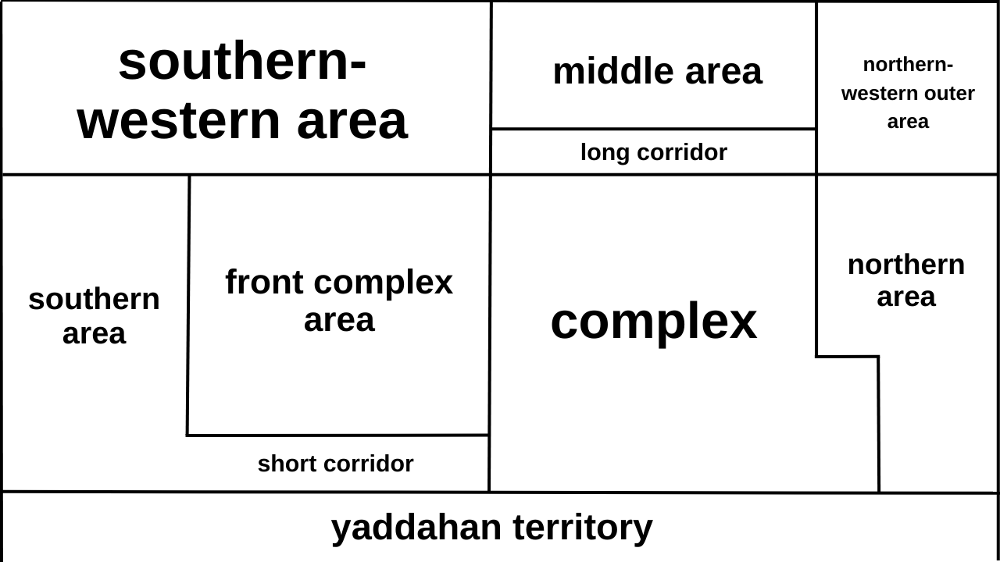

| Operation Nisan | |
|---|---|
|

Map of the area attacked by the Yaddah forces
|
|
| Type | Raid |
| Location | Pereg 11, Israel |
| Date | April 2024 |
| Executed by | Yaddah Forces |
| Outcome | Yaddah annexes pereg 11 |
Operation Nisan
Operation Nisan was a ground raid conducted by Yaddah forces on the Parg 11 complex, a site located near the borders of the Democratic Republic of Yaddah. The operation resulted in the capture and subsequent annexation of the complex. It was carried out using non-lethal toy weaponry, marking a unique approach to military action.
Background
The raid followed Yaddah’s acquisition of a stockpile of toy weapons, which the leadership identified as an opportunity to expand their territorial control. The Parg 11 complex, located in proximity to Yaddah’s borders, was deemed a suitable target due to its accessibility. Before the operation, Yaddah’s leaders convened a military assembly to discuss the planned raid, establishing a strategy for conducting future operations.
Operation
The raid involved three Yaddah soldiers using Soft Bullet Gun Toy 24, Wembley Soft Bullet Blaster, and Werfer Alpha Strike. The forces entered through the southeastern gate, with one soldier flanking through the eastern corridor to secure the western courtyard. The remaining two soldiers cleared the main courtyard before breaching the building and systematically clearing rooms on the lower floor. Warning shots were fired using toy weapons, and a sniper provided cover, targeting potential hiding spots.
Aftermath
Upon securing the complex, Yaddah forces declared the annexation of Parg 11 into the Democratic Republic of Yaddah. The annexation has not been recognized by any internationally established sovereign state, leaving its legal status unresolved. Both Yaddah and Israeli sources confirmed that no injuries or casualties occurred during the operation, as only non-lethal toy weapons were employed.